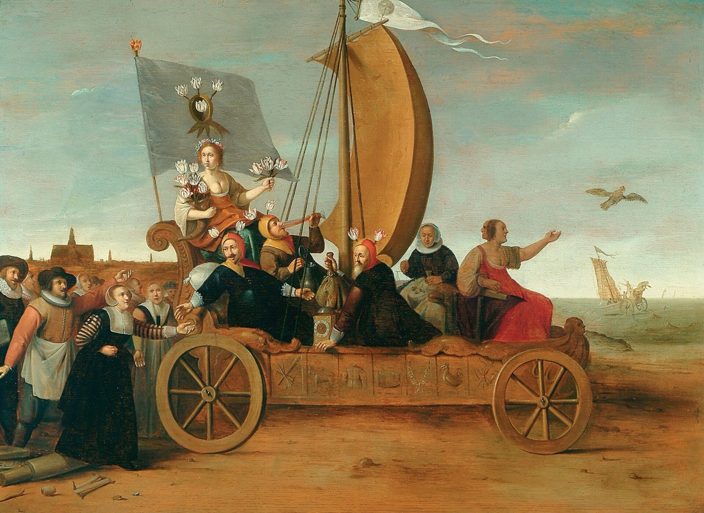
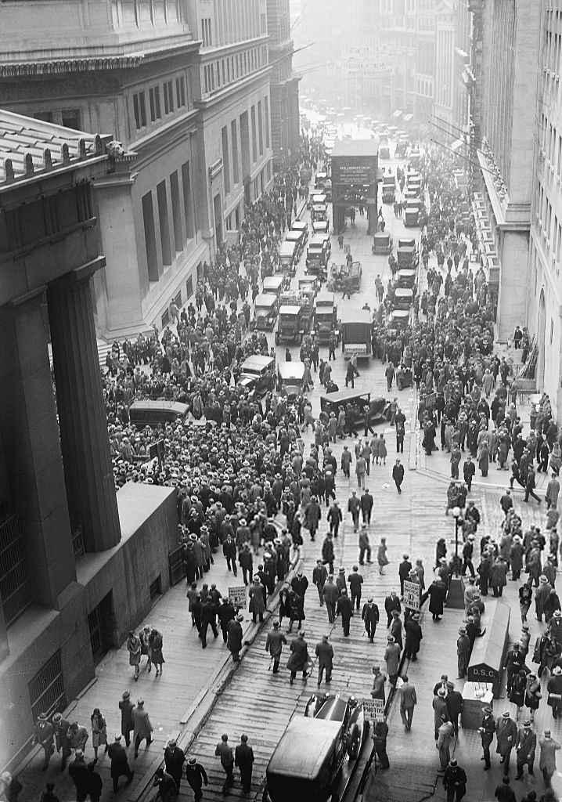
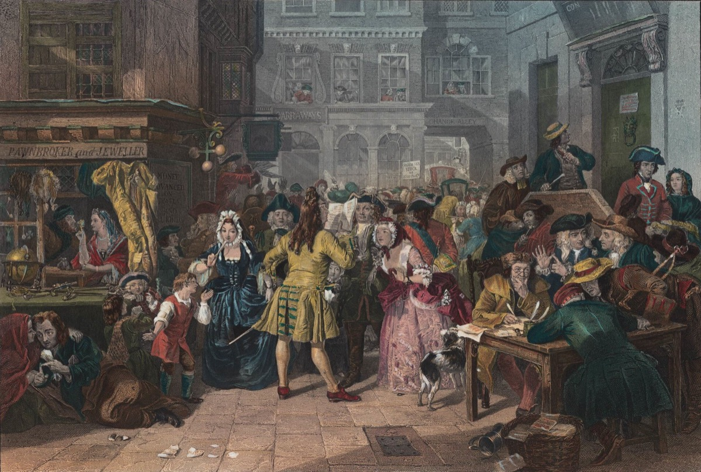
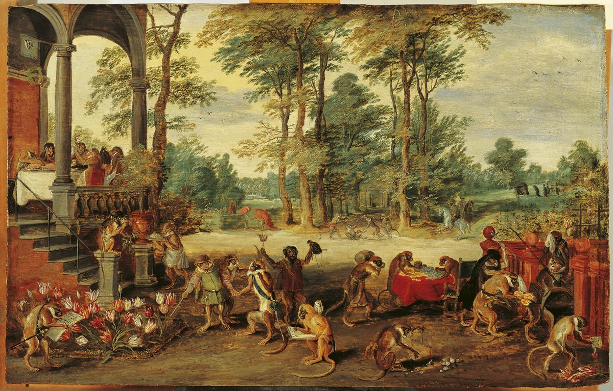
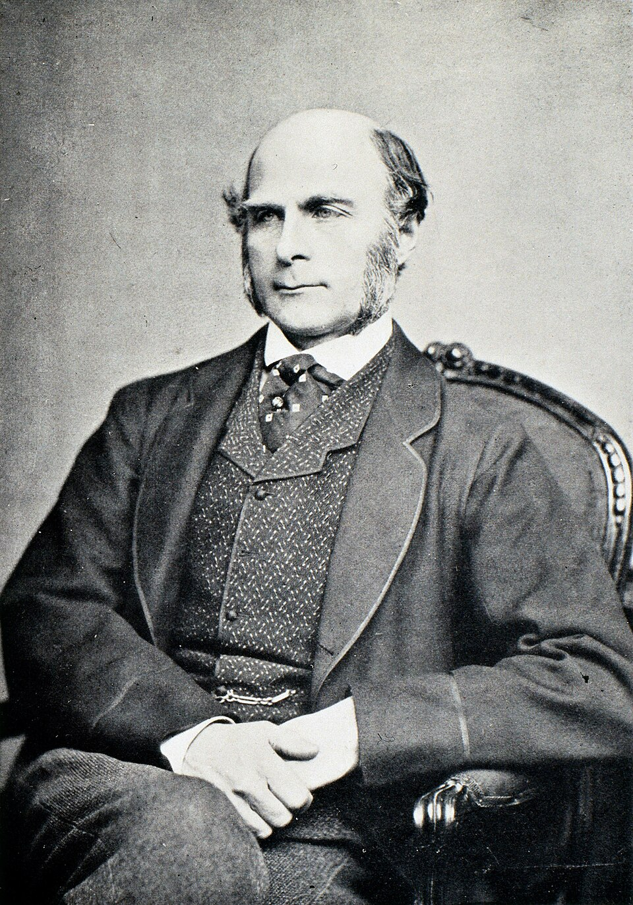

“It ain’t what you don’t know that gets you into trouble. It’s what you know for sure that just ain’t so.”attributed to Mark Twain
In the winter of 1637, in the city of Haarlem, a single tulip bulb — a striped variety called Semper Augustus — sold for ten times the annual wage of a skilled craftsman, enough to buy a fine canal house, a coach, and a team of horses. Sober Dutch merchants, men who had built the most rational mercantile civilization the world had yet seen, sat in taverns trading paper futures on flowers they had never seen, in a market that did not formally exist, at prices that doubled every few weeks. Then, on a single Tuesday in February, the market refused a bid at a routine auction. By Friday, prices had collapsed to a thousandth of their peak. Lives were ruined. Marriages broke. Two centuries later, when historians and economists came to look at the wreckage, they noticed something stranger than the prices: the men involved had been, by every other measure, intelligent.
The case of the tulips is not a quaint relic. It is a small, perfect specimen of something that runs through every age of human life and will, in some new costume, claim its share of our own. The same mind that detected a basement fire through six lives of accumulated firefighting in our previous chapter is the mind that, three centuries earlier, traded a coach and horses for a flower. Both are System 1 at work. Both feel, from the inside, like simply seeing what is there. And the project of this chapter is to map — carefully and without contempt — the typical, predictable, beautiful mistakes the fast mind makes.
We say beautiful because these mistakes are not random failures of a broken machine. They follow rules. They are, almost without exception, the symptoms of a brain doing exactly what it was built to do, in a world it was not built for. By the end of this chapter you will have a portable field-guide to your own most likely errors. You will also, we hope, have an answer to the deeper question that hides inside the catalogue: if our minds are this riddled, how did we ever build cities at all?
These are not bugs in a broken machine. They are features of a machine optimised for a world that has stopped existing.
The First BiasThe Mind That Looks for What It Already Believes
On the morning of 21st December 1954, a small group of believers in Lake City, Wisconsin, sat in the living room of a Mrs. Marian Keech and waited for the end of the world. Mrs. Keech had received messages, in a process of automatic writing, from beings called the Guardians on the planet Clarion: a great flood would inundate the western hemisphere at midnight, but a flying saucer would arrive before then to rescue the faithful. The believers had quit their jobs and given away their possessions. Several wore tinfoil to deflect the saucer’s sensors. They waited. Midnight came. The saucer did not. Neither did the flood.
Most observers would predict that the cult dissolved in shame. What actually happened is one of the most important findings in social psychology. By dawn, Mrs. Keech had received a new message: God, moved by the small group’s steadfastness, had spared the entire planet. The believers, who had been quiet and inward before the failure, now spilled into the streets to proselytize with greater fervour than ever. Their belief had not been damaged by the disconfirmation. It had been strengthened by it. The social psychologist Leon Festinger, who had infiltrated the group, gave the phenomenon a name and a book: When Prophecy Fails. The mechanism beneath it was what he would soon call cognitive dissonance.1
It is also the headquarters of confirmation bias — the most important single fact about the human relationship with evidence.
Confirmation bias — the universal habit of seeking and weighing evidence that supports a belief we already hold, and of finding reasons to discount evidence that contradicts it. We do not gather data and then conclude. We conclude first, and then gather data to defend the conclusion.
The clean experimental demonstration came from the British psychologist Peter Wason. He showed his subjects four cards lying on a table — A, K, 4, 7 — and proposed a rule: if a card has a vowel on one side, it has an even number on the other. Which cards must you turn over to test the rule? The answer, as a moment’s honest thought reveals, is A and 7: A to confirm the rule holds, 7 to confirm it is not violated. About one in ten people gets this right. Nearly everyone turns over A and 4 — looking for confirmation, not falsification. We do not naturally seek the case that would prove us wrong. We have to be trained to.2
This single tendency runs beneath an astonishing range of human pain. It is why a frightened lover finds new "evidence" of betrayal in every quiet evening. It is why intelligent people, given the same news story, walk away with directly opposed convictions, each more certain than before. It is why couples in our consulting rooms describe the same marriage as if they had lived two different ones. The brain is not, by default, an evidence-gathering organ. It is, by default, an evidence-selecting one. The faculty of seeking out the case that contradicts you — the heart of science, of due process, of any honest argument — is something a person can be taught, but never something they will naturally do.
We do not seek evidence. We seek the confirmation of what we already believe — and we are remarkably resourceful in finding it.
The Second BiasThe Vivid Eats the True
Ask anyone whether more Americans die each year from terrorist attack or from falling out of bed. The answer, by an order of magnitude in most years, is the bed. Yet bedrooms inspire no laws, no airports, no infrared scanners, no decades of foreign policy. The discrepancy is not stupidity. It is a precise expression of a specific bias: when we estimate how often something happens, we do not consult a record — we ask how easily an example springs to mind. Examples that are vivid, recent, photographed, repeated on screens, or charged with fear come to mind quickly. Examples that are dull, ordinary, or statistical do not. The mind then takes the speed of recall as a proxy for the likelihood of the event itself. Kahneman and Tversky called this the availability heuristic, and it shapes more of public life than almost any other single fact about the brain.3
Availability heuristic — we judge how common or likely a thing is by how easily we can call examples to mind. Useful when memory is a fair sample of the world. Dangerous when memory is supplied by news, social media, or the most recent fright.
The cost of getting this wrong is not abstract. Plane crashes, broadcast for days in vivid colour, make millions afraid of an act of travel that is, mile for mile, the safest yet devised — while the drive to the airport, which kills roughly 40,000 Americans annually and goes unfilmed, is taken without thought. Shark attacks, of which fewer than ten worldwide are typically fatal in a year, redirect summer holidays; heart disease, which quietly takes hundreds of thousands, redirects almost nobody’s breakfast. The vivid is not the true. The frightening is not the likely. And the news, by its nature, is a daily catalogue of the vivid and the frightening — a feed engineered, with no malice, to mis-train your statistical instincts.
The clinical version is what we see in the consulting room every week. A patient whose father died of a sudden heart attack lives, year after year, with a body braced for the catastrophe she has already vividly imagined; another patient flies once a year in terror after a single news story, then drives twenty thousand miles in peace. Helping people requires, in part, helping them see that their fear is not a measurement of risk — it is a measurement of imagination. The two often diverge by an order of magnitude, and we are usually arguing with the wrong one.
The Third BiasThe Story We Cannot Help Telling
In 1972, on the eve of President Nixon’s visit to China — an event then considered improbable enough that history books would record the trip as a great gamble — the psychologist Baruch Fischhoff asked students to estimate the likelihood of various outcomes. After the trip, he asked them what they had predicted. Almost every student, with no awareness of having altered their memory, recalled having predicted what actually happened. Once the outcome was known, the prior uncertainty silently vanished. The trip had become, in the rear-view mirror, obvious.4

This is hindsight bias — the “I-knew-it-all-along” effect — and it is the quiet engine of cruelty toward people whose decisions came out badly. We try the surgeon who lost the patient as if the wisdom of the operation could be read from its outcome; we condemn the general whose careful plan met an unlucky storm; we shake our heads at the buyer who, in 2007, bought the house at the top of the market, as if the mortgage broker should have heard a klaxon we ourselves could not have heard. Hindsight makes every disaster look obvious and every fool look like an idiot. Real life is run forward, in fog. Judging decisions by their outcomes — instead of by the quality of their reasoning given the information available at the time — is one of the most consequential errors a human being can make, and we make it constantly.5
Beneath hindsight lies an even deeper habit. We do not remember the past as a sequence of contingent events with alternative branches the universe almost took; we remember it as a story, narrated backward from the ending, with every twist serving the conclusion. Nassim Taleb called this the narrative fallacy: the human inability to tolerate a sequence of facts without a connecting story.6 The story always feels truer than the messy reality it replaces — and once we have built it, the original uncertainty is unrecoverable. This is why historical accounts always make even the most chaotic period look inevitable in retrospect. It is also why we should be cautious of confident explanations for any current event. The story you are hearing on the news tonight is, in part, already a hindsight reconstruction. The actual present is always more confused than the past.
Hindsight makes every disaster look obvious and every fool look like an idiot. Real life is run forward, in fog.
The Fourth BiasThe Pull of What We Already Hold
Take a coffee mug from a drawer and give it, at random, to half the people in a room. Ask them what they would sell it for. Now ask the other half — people who have not yet been given a mug — what they would pay for the same one. Run this carefully, as the economist Jack Knetsch did at Simon Fraser University, and you discover something deeply strange: the sellers will not part with the mug for less than about twice what the buyers will offer for it.7 Nothing has changed about the mug. The only thing that has changed is whose hand it sits in. And the moment it sits in yours, your mind — without your permission — has revalued it upward. This is the endowment effect, and it is the smallest visible part of a much larger pattern: the mind’s general, powerful resistance to giving anything up.
You met its cousin in the last chapter: loss aversion, the lopsidedness by which losing a hundred pounds hurts twice as much as gaining one feels good. Together with two other biases — sunk cost and status quo — loss aversion forms a single great force in human life, a kind of psychological gravity that draws us toward keeping things as they are even when changing them would plainly be better.
The sunk cost fallacy is the conviction that effort, money, or years already spent on a thing oblige us to spend more. Engineers building the supersonic Concorde, when it became clear the project would never recover its cost, continued for a decade essentially because they had already spent so much — a pattern so common that economists still call it the “Concorde fallacy.” The price you paid for a stock, a relationship, a book, a career has no logical bearing on whether continuing makes sense from this moment forward; the only question that does is whether the future return justifies the future cost. The mind refuses to see this. It feels, in its bones, that to walk away is to admit the past was wasted — and that admission is so painful we will keep paying for the past with our future to avoid it. Whole lives have been organised this way.
And there is status quo bias, the simple, devastating preference for things as they are. The clearest demonstration is one of the most consequential public-policy findings of our century. Countries that ask drivers, when renewing a licence, to opt in to organ donation report consent rates around 15 percent. Countries that ask drivers to opt out — same population, same culture, same forms — report rates above 90 percent.8 The defaults do almost all the work; the choice does almost none. People, when given a small frictionless act of staying as they are, will overwhelmingly take it. The cumulative consequence is enormous: thousands of lives saved or lost each year not by what we believe, but by which way the form is printed.
Behind all three of these lies a single, sober truth about the human animal. You do not move toward what is better. You cling to what is yours.
The Fifth BiasThe Crowd Inside the Head

In 1951 the social psychologist Solomon Asch sat eight young men in a room, told them he was studying visual perception, and showed them a card with a single vertical line. Then a second card with three lines — one obviously the same length as the first, the others obviously different. Each man, in turn, said which of the three matched. Seven of the eight, unknown to the last man, were Asch’s confederates, instructed to give the same wrong answer. The eighth was the real subject. About a third of the time, he conformed: he gave the obviously wrong answer rather than be the odd one out. When debriefed, many were not lying for politeness — they reported genuinely seeing the lines differently when the others did. The pressure of the group had quietly entered their perception itself.9
This is the bias that, scaled across a country, produces a tulip mania. It is what we see in the consulting room as a woman who cannot leave a marriage everyone admires, or a man who cannot break ranks with a political tribe whose loyalties he privately no longer shares. The brain is, before anything else, a social organ. For most of our evolutionary history, the cost of being marked as different from one’s group was not embarrassment — it was death. We are descended from the ones who conformed enough to survive. The instinct does not retire when the campfire becomes a stock exchange.

And yet — and this is one of the great hopeful complications in the study of crowds — the group mind is not only a source of error. In 1907, at a country fair in Plymouth, the polymath Francis Galton watched eight hundred fairgoers each guess the dressed weight of an ox. The individual guesses ranged from absurd undercounts to wild overestimates, exactly the noise you would expect of an untrained crowd. But when Galton calculated the median guess, he was astonished. It came to 1,207 pounds. The actual weight was 1,198. The crowd, taken as a single estimator, had been off by less than one per cent — better than any individual expert in the room.10

How can the same species that loses fortunes on tulips also out-perform its experts at a fair? The decisive difference is independence. Galton’s fairgoers wrote their guesses on slips of paper. They did not see one another’s numbers. Each error was uncorrelated with the next, so the errors cancelled out and the signal remained. Tulip buyers and South Sea speculators were, by contrast, looking directly at each other — bidding because others were bidding, buying because the price was rising, certain because everyone else seemed to be. The crowd became wise or foolish according to a single hidden variable: whether judgments were made in private or in cascade. This is, with no exaggeration, one of the most useful pieces of practical psychology we know. Crowds are wise when their judgments are independent and foolish when they imitate. The difference is everything. It explains why secret ballots work and why opinion polls move; why peer review is valuable and why social-media discourse is not; why a well-designed market discovers truth and a feeding frenzy of buyers destroys it. The mob in the painting and the crowd at the fair are the same number of minds. What separates them is whether they are watching the answer or the answerer.
The Objection That Matters“If We Are This Broken, How Did We Build Cities?”
Here, again, the honest reader pushes back, and the objection deserves a serious answer. If our minds are riddled with all of this — confirmation, availability, hindsight, sunk cost, conformity — how on earth did this same species build aqueducts, write symphonies, and put a machine on Mars? Either the experiments are exaggerated or there is something missing in the picture.
Both halves are partly right. The replication crisis of the 2010s did show that several famous bias studies were weaker than their headline numbers suggested; we hold the lighter findings loosely. But the deeper answer comes from a psychologist named Gerd Gigerenzer, who has spent his career making one stubborn case: the “biases” we have catalogued are not pathologies of a defective machine. They are, almost without exception, fast and frugal heuristics — rules of thumb — that worked superbly in the world that built them.11
Availability is a marvellous shortcut when your memory is a fair sample of your environment, as it was for ninety-five percent of human history. Most of the things that killed your ancestors were the things they had personally seen kill someone. The heuristic fails only now, because mass media has supplanted personal experience with a feed of unrepresentative horrors. Confirmation bias is socially adaptive in a tribe: maintaining solidarity with the group’s beliefs was a survival behaviour, and dissent could be fatal long before it could be intellectually elegant. Loss aversion is the precisely correct setting for a creature near the margin of starvation, for whom a 10% loss could mean death while a 10% gain only meant a slightly better week. Conformity is how a young human, with twenty years of growing to do before adulthood, learns what is safe and what is poisonous in a strange forest. These are not the malfunctions of a broken brain. They are the perfectly tuned outputs of a brain calibrated for a world that has stopped existing.
This reframing matters enormously, and not only intellectually. To call our typical mistakes biases is to imply that a kind of grim error-correction is the path to a better mind. To call them heuristics is to recognise that they remain, much of the time, our best available tools — and that the question is no longer how to extinguish them but how to know when they fit the world we are in and when they do not. Confirmation bias is fine when you are choosing whether to trust a long-time friend; it is dangerous when you are choosing whether to invade a country. Availability is fine when you live in a village of a hundred people; it is dangerous when you live in a phone. The biases were never the problem. The problem is using the wrong tool in the wrong century.
Where It Touches Your LifeWhat You Can Actually Do
The same honest answer we gave at the end of the last chapter applies here. You cannot read a list of biases and become immune to them; the Müller-Lyer lines do not stop looking unequal because you read about them. What you can do is recognise the handful of situations in which a bias reliably costs the most, and arrange for a different process at exactly those moments. Three tools are worth their weight in any life.
The pre-mortem. Before any decision that matters — a hiring, a purchase, a treatment plan, a marriage — the psychologist Gary Klein has us perform the following one-minute exercise. Imagine that, two years from now, this decision has gone disastrously wrong. Write the obituary. What killed it? The act of pre-imagining failure unlocks objections that, asked any other way, the optimism of the moment would have suppressed. It is the closest thing we have to a vaccine against overconfidence.12
Consider the opposite. Charles Lord and his colleagues demonstrated, in the 1980s, that simply asking subjects to write down the strongest argument against their own position, before reading new evidence, dissolved much of their confirmation bias.13 It is a small discipline with disproportionate effect. Asking, before any strong opinion leaves your mouth, “What is the best version of the case for the other side?” is, by itself, an act of intellectual decency — and a remarkably effective one.
The outside view. When making a forecast about your own project — how long the renovation will take, whether the start-up will succeed, when the book will be finished — do not ask “what is the particular path of this case?” You will, like every founder before you, overweight the special features that make yours feel unlike the others. Ask instead what Kahneman calls the outside view: what is the base rate for cases like mine? How long does the average renovation take? What share of start-ups in this sector survive five years? The base rate is humbling and almost always closer to the truth than your own case feels. The pain of taking it seriously is one of the cheapest forms of wisdom available.14
You will note what is missing from this list: nothing about willpower. Nothing about “trying harder to be rational.” That is because, as we said last chapter, the slow mind is too lazy and too easily depleted to mount a steady defence on its own. The strategy is never to outmuscle the fast mind. It is to install small, lawful interruptions in the moments when it is most dangerous to follow.
“Is the mind broken, or beautifully adapted?”
After three centuries of cataloguing our errors, the deeper question remains. Six who have spent their lives looking at it.
“Both, depending on the question you ask. In ancestral conditions, almost every ‘bias’ was a survival behaviour. In modern conditions, several have become liabilities. The discipline is matching the tool to the world.”
“What I see is suffering, not stupidity. The patient who cannot leave the marriage, the trader who cannot sell the losing stock — they are not failing to understand. They are obeying a deeper rule against losing what they hold. Treating them as illogical is itself a failure of understanding.”
“Most of these biases serve a social, not a logical, function. Confirmation bias preserves group cohesion; availability tunes you to local threats; conformity transmits culture. Take a tribal mind, transplant it into an industrial society, and the same circuitry that built solidarity now builds bubbles. The mind hasn’t changed. The world has.”
“The point that matters is that the default is doing most of the work. If you understand status quo bias, you can save lives by changing a form. We don’t need humans to be rational. We need systems that don’t depend on it.”
“Hold this whole catalogue lightly. The replication crisis showed that some effects were inflated, and the field is still settling. The core findings — loss aversion, anchoring, availability, conformity, hindsight — survive. The marginal ones may not. We owe the reader that honesty.”
“Then the right response to the catalogue is not contempt. It is a measure of mercy — for the foolish trader, for the cult, for ourselves. We are all working a Stone Age machine through a digital world. Knowing it is the beginning of patience.”
Myth vs. RealitySetting the Record Straight
What We Like to Believe
“Intelligent people, given good information, make rational decisions. My education, experience, and good intentions protect me from the cruder errors. I see the world more or less as it is.”
What the Evidence Shows
Education and intelligence offer almost no protection against the major biases — sometimes they make them worse, because a brighter mind is a more inventive defender of its prior beliefs. The reliable improvements come not from better minds but from better processes: pre-mortems, considering the opposite, the outside view, defaults that work in our favour, peer review, secret ballots. The mind cannot be rebuilt. The environment around it can.
Honesty about our own field cuts here too. During psychology’s replication crisis several famous bias findings — certain priming effects, the strongest readings of the Dunning–Kruger result, some power-pose studies — turned out to be weaker than their original reports suggested. The core findings of this chapter (confirmation bias, availability, hindsight, loss aversion, conformity) are robustly replicated and survive. But we keep the lighter results in the lighter hand, and we tell you when we are doing so. The science of how we are fooled must keep checking whether it has been fooled.
The lines worth carrying out of this chapter.
- We do not seek evidence. We seek confirmation — and we are remarkably resourceful in finding it. The discipline of looking for the case that would prove you wrong is the heart of every honest mind.
- The vivid is not the true. The frightening is not the likely. Your fear is a measure of your imagination, not of risk.
- Hindsight makes every disaster look obvious and every fool look like an idiot. Real life is run forward, in fog. Judge decisions by the quality of their reasoning, not the luck of their outcome.
- You don’t move toward what is better; you cling to what is yours. Loss aversion, sunk cost, endowment, status quo — one gravity, four names.
- Crowds are wise when their judgments are independent and foolish when they imitate. The difference between Galton’s fair and the South Sea Bubble is whether each mind looked at the question or at the other minds.
- These are not bugs in a broken machine. They are heuristics built for a world that no longer exists. The work is matching the tool to the world — and building systems that don’t need us to be more rational than we can be.
If you keep one sentence: do not try to think better. Build the conditions under which better thinking is the easier path — and treat the rest of us, when we fail, with the mercy of one Stone Age mind to another.
Research ReferencesSources & Notes
- ReferenceFestinger, L., Riecken, H. W., & Schachter, S., When Prophecy Fails (1956); Festinger’s theory of cognitive dissonance is developed in A Theory of Cognitive Dissonance (1957).
- ScienceWason, P. C., “Reasoning about a rule,” Quarterly Journal of Experimental Psychology (1968) — the four-card selection task.
- ScienceTversky, A. & Kahneman, D., “Availability: A heuristic for judging frequency and probability,” Cognitive Psychology (1973).
- ScienceFischhoff, B., “Hindsight is not equal to foresight: The effect of outcome knowledge on judgment under uncertainty,” Journal of Experimental Psychology: Human Perception and Performance (1975).
- ScienceHawkins, S. A. & Hastie, R., “Hindsight: Biased judgments of past events after the outcomes are known,” Psychological Bulletin (1990).
- ReferenceTaleb, N. N., The Black Swan (2007) — the narrative fallacy.
- ScienceKahneman, D., Knetsch, J. L. & Thaler, R. H., “Experimental tests of the endowment effect and the Coase theorem,” Journal of Political Economy (1990).
- ScienceJohnson, E. J. & Goldstein, D. G., “Do defaults save lives?” Science (2003) — opt-in vs. opt-out organ donation.
- ScienceAsch, S. E., “Studies of independence and conformity,” Psychological Monographs (1956); and earlier 1951–52 line-judgment experiments.
- HistoryGalton, F., “Vox populi,” Nature (1907) — the ox-weighing observation. Modern treatment: Surowiecki, J., The Wisdom of Crowds (2004).
- DebatedGigerenzer, G., Rationality for Mortals (2008) and Risk Savvy (2014) — the ecological-rationality reframing.
- ScienceKlein, G., “Performing a project pre-mortem,” Harvard Business Review (2007).
- ScienceLord, C. G., Lepper, M. R., & Preston, E., “Considering the opposite,” Journal of Personality and Social Psychology (1984).
- ScienceKahneman, D. & Lovallo, D., “Timid choices and bold forecasts: A cognitive perspective on risk taking,” Management Science (1993) — the outside view.
Citations support the science presented; a production edition would carry full bibliographic detail and DOIs, externally verified.
Going FurtherRecommended Books
Read
- Daniel Kahneman, Thinking, Fast and Slow (2011)
- Nassim Nicholas Taleb, The Black Swan (2007) & Fooled by Randomness (2001)
- Gerd Gigerenzer, Risk Savvy (2014) — the case for ecological rationality
- Richard Thaler & Cass Sunstein, Nudge (2008)
- Charles Mackay, Extraordinary Popular Delusions and the Madness of Crowds (1841) — the original
- Robert Cialdini, Influence (1984)
Watch & Listen
- Daniel Kahneman, lectures on YouTube and on EconTalk
- Documentaries on tulip mania, the South Sea Bubble, and the 1929 crash
- Gerd Gigerenzer on the limits of bias research